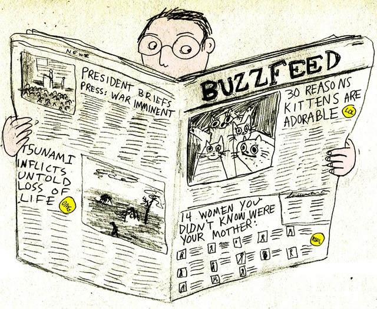

Photo by Jon S. on Flickr
For several years now journalism students have been hearing about the death of print media and publications. Everything is digital now, including the New School’s student-run paper, The New School Free Press.
Accessibility to mobile devices and online pages have changed the manner in which people read, as the Internet has roughly 2 million blog posts uploaded every day. The options for news and leisurely reading content are endless online.
But with the influx of web content, there is a need to also look at web design and how it differs from its print counterpart.
“If I’m reading an article online, I normally like something that’s easy to navigate,” Devenne Washington, psychology sophomore at Lang, said. “Maybe even minimal. I don’t want to hunt for content.”
This is the direction that Chris Johanesen, Vice President of Product at Buzzfeed, sees the design of journalism for their site going.
“We let the content tell the story,” Johanesen said in an interview with Sue Apfelbaum and Juliette Cezzar for their case study novel Designing the Editorial Experience (2014). “We tend to take the simplest tack with things like this: present the content simply, all on one page, and let the reader decide how to consume it.”
As a journalist, an editor will always cut extra words that aren’t needed for an article. The design for journalism, especially web journalism and design, is making it’s way in the same direction. Like Johanesen said, it’s important for readers to decide how to consume and process what they’re reading and seeing. The way many publications are appealing to readers like Washington, is by following a clean, minimalist design approach.
However, it is worth noting that other publications are approaching the design of journalism with content focused material as well, but that doesn’t always translate directly to the written word. The design of journalism includes things from the use of audio, videos, and photos as well.
Quinn Sullivan, Lang sophomore and writing major, is interested in a clean design like Washington. However, when it comes to photos and photo layout, she said it is possible to make it easy on the eye, but still visually interesting and stimulating.
“I like large images, and being able to focus on one [image] at a time.” Sullivan said. “Also, there’s opportunity to create a new image with a group of images. If they’re collaged in an interesting way, even better. But definitely sticking to a theme.”
Working towards the clean and easy to navigate design future of journalism, Andrea Fella, Design Director of Paper Magazine, shares similar views to that of Sullivan when it comes to designing the layout of photos.
“The Times’ way of designing is very much about the content,” Fella said. “You read the pieces first and figure out which photos in which sequence really tell the story you want. It takes a lot of reworking and rethinking to get it right and satisfy all the parties involved. But also the words and photos are definitely prioritized, so the design had to be strong and support those things. There was no design for design’s sake there; it all had to be justified.”
Fella describes that at The New York Times, one of the most reputable publications of all time, sitting down to design the layout of their photos and text to heighten the content and tell a story is crucial, what journalism is all about.
The Times may not have a wild design plan like other publications, but they specifically try and keep a focused and steadied look, much like Buzzfeed and even Paper Magazine. All of these publications see that this is where the design of journalism is heading, and while it is important to have stimulating stuff happening on the page, whether it is print or digital, a theme and direction is also important to viewers and readership.
Much of the design of journalism is about accessibility and making sure it is appealing and helping your readers form an opinion about not only the design, but the content. The case studies as well as Sullivan and Washington demonstrate that the future of journalism is an easy to navigate, minimal, but still stimulating and interacitve design.
“The Times’ way of designing isIllustration by Hallie Bateman
